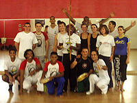
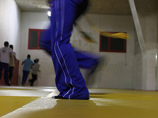

Ce que l'association peut vous apporter :
Dans cette pratique avant tout sportive, dont l’une des caractéristiques principales, comparée aux autres Arts Martiaux, est sa nature pluridisciplinaire (sport de combat, musculation, assouplissements, danses et chorégraphies, mais aussi rythme et chants, pratique d’instruments de percussions et autres, langue et culture brésilienne).
Vous vous retrouverez face aux nombreuses qualités physiques et d’esprit que peut vous apporter sa pratique.
Une volonté de fer risque naitre en vous !
Dans un cadre purement physique, elle développera votre endurance et votre force, elle sculptera votre corps (et oui mesdames, et messieurs, joignez l’utile à l’agréable), augmentera votre tonicité musculaire, votre dynamisme et votre rapidité, sans oublier les changements bénéfiques de l’acquisition de souplesse…
De plus, vous exercerez et augmenterez votre coordination et vos réflexes.
Vous apprendrez aussi à connaître votre corps, ses limites, et à le contrôler…
D’un point de vue mental et humain, la capoeira socialise et lutte contre la timidité.
Elle vous orientera vers des qualités telles que le respect, la discipline, l’engagement, l’écoute, le partage et bien d’autres encore.
Elle vous rendra sans doute, plus curieux, plus éveillé au monde qui vous entour, dans bien des domaines de la vie courante.
Vous ne pourrai, bien entendu, passer à coté de tout ce que la pratique de la musique entraine.
En sommes, cette discipline immense et riche d’apprentissage se veut très complète et sera vous donner entière satisfaction, sur bien des niveaux.
Il existe aussi cher nous, une réel énergie de groupe qui vous permettra de faire des rencontres et des activités bien au delà de la simple pratique sportive…

